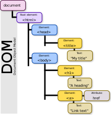

Document Object Model
Document Object Model
The browser represents the page using a DOM tree.
DOM trees have four types of nodes: document nodes, element nodes, attribute nodes and text nodes.
You can select element nodes by their id or class attribute, by tag name, or using CSS selector syntax.
Whenever a DOM query can return more than node, it will always return a NodeList.
From an element node, you can access and update its content using properties such as textContent and innerHTML or using DOM manipulation techniques.
An element node can contain multiple text nodes and child elements that are siblings of each other.
In older browsers, implementation of the DOM is inconsistent (and is a popular reason for using jQuery).
Browsers offer tools for viewing the DOM tree.
JS: